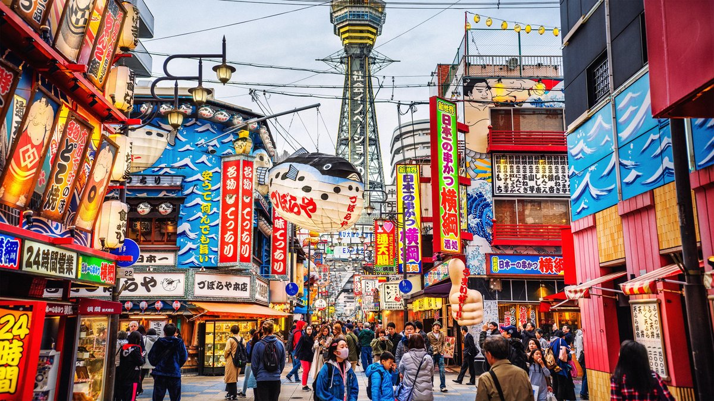
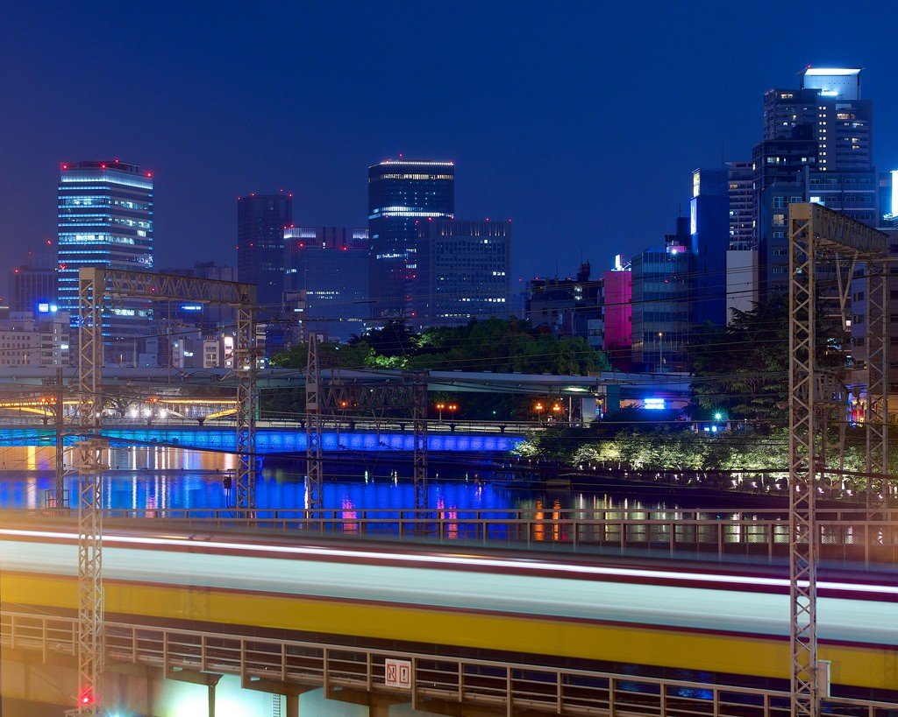
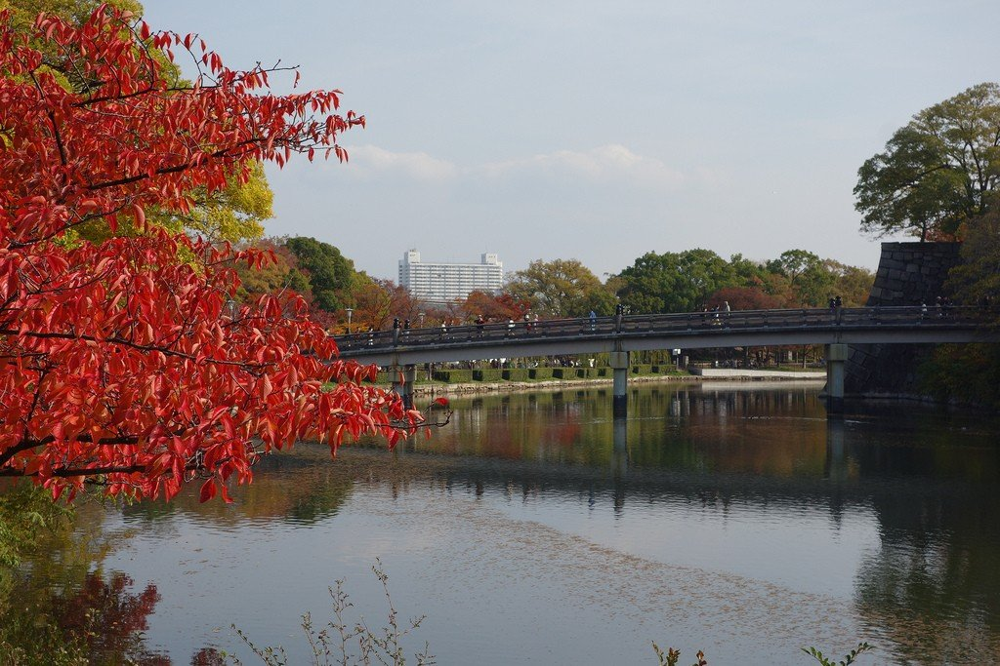
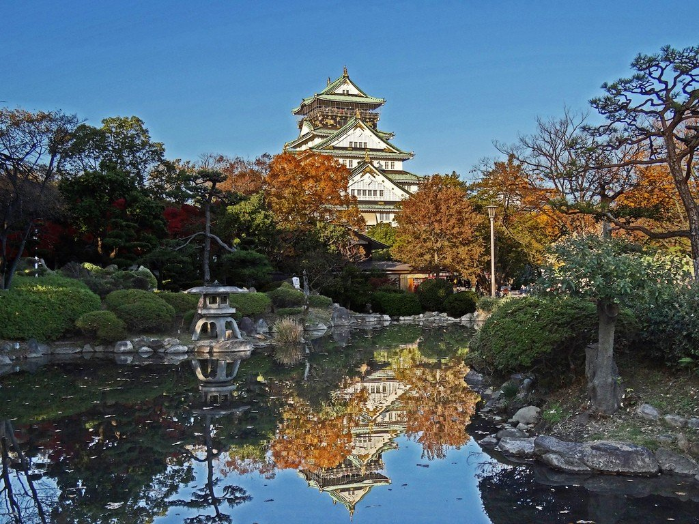

Осака — один из крупнейших городов Японии, расположенный в регионе Кансай на острове Хонсю. Этот город часто называют гастрономической столицей страны. Осака славится своей живой атмосферой, дружелюбными жителями и яркой ночной жизнью. Здесь традиции гармонично сочетаются с современностью, создавая уникальный характер города.
Общая информация о Осаке
Осака – это третий по величине город Японии и главный экономический мотор страны. Если Токио – это лицо современной Японии, а Киото – ее душа, то Осака – это ее желудок и кошелек. Расположенный в центре региона Кансай, этот город на протяжении веков служил главными торговыми воротами страны. Местных жителей по всей Японии знают как энергичных, практичных и очень разговорчивых людей, а их знаменитый кансайский диалект звучит для токийцев почти как иностранный язык.
В отличие от чопорного Токио и медитативного Киото, Осака – это город простых удовольствий. Здесь не парят в облаках, а твердо стоят на земле. Главная ценность для местных жителей – это вкусная еда и хорошая прибыль. Не случайно в народе говорят: «Осака разорится на еде» (перефразируя старую поговорку о том, что киотонец разорится на кимоно). Улицы города заполнены ресторанами, уличными ларьками и питейными заведениями, а воздух с утра до ночи пропитан запахами жареного мяса, соевого соуса и свежих морепродуктов.
Осака также известна своим чувством юмора и любовью к зрелищам. Именно здесь зародился театр бунраку (кукольный театр) и традиционная комедия ракуго. А еще Осака – родина самого известного в Японии бродячего комика, чьи шутки понимают даже иностранцы благодаря яркой жестикуляции. Город не пытается казаться изысканным или духовным, и в этом его главная привлекательность. Он честный, шумный, немного грубоватый и очень живой.



Достопримечательности Осаки
Главным символом города и его архитектурной доминантой является замок Осака (Осака-дзё). Эта величественная пятиэтажная башня, окруженная рвами и массивными каменными стенами, была построена в конце XVI века знаменитым полководцем Тоётоми Хидэёси. Замок сыграл ключевую роль в объединении Японии, и сегодня он напоминает о временах самураев и междоусобных войн. Сама башня была неоднократно разрушена и восстановлена, и нынешнее здание – это бетонная реконструкция с лифтом внутри, что не мешает ему оставаться главной туристической точкой города.

Внутри замка расположен музей, где можно узнать об истории Осаки, увидеть доспехи самураев и личные вещи Тоётоми Хидэёси. С верхнего этажа башни (высота около 50 метров) открывается отличный вид на весь город. Особенно красиво здесь весной, когда парк вокруг замка утопает в цветущей сакуре. Местные жители устраивают пикники прямо на газонах, а воздух наполняется розовыми лепестками. Вход в замок стоит недорого, а погулять по окружающему парку можно и вовсе бесплатно.
Вторая по значимости достопримечательность Осаки – это район Дотонбори. Это сердце ночной жизни города и главное место для гастрономических приключений. Главный канал района обрамлен яркими неоновыми вывесками и огромными механическими фигурами: здесь и гигантский осьминог, и дракон, и знаменитый бегун с часами на здании Glico, который стал визитной карточкой Осаки. Сворачивая в узкие переулки, вы попадете в мир маленьких ресторанчиков и баров идзакая, где подают местные специалитеты.

Что же обязательно попробовать в Дотонбори? Во-первых, такояки – жареные шарики из теста с кусочком осьминога внутри. Их готовят прямо на улице и подают горячими с соусом и сушеными хлопьями тунца, которые танцуют от пара. Во-вторых, окономияки – японская пицца или блинчик с капустой, мясом, морепродуктами и яйцом. В-третьих, кусикацу – обжаренные в панировке мясо и овощи на палочке. В Дотонбори действует негласное правило: если вы зашли в ресторан, то не стесняйтесь есть на ходу. Уличная еда здесь не просто разрешена, а является частью местной культуры.
В завершение стоит сказать, что Осака – это идеальное место для тех, кто устал от музейной тишины Киото и давящих небоскребов Токио. Здесь можно просто гулять, есть, смеяться и никуда не спешить. Город не требует от вас интеллектуальных подвигов или благоговейного молчания. Приезжайте сюда голодными, возьмите удобную обувь и приготовьтесь к тому, что вы будете переедать каждый день. И помните главное правило Осаки: если вкусно, то неважно, как это выглядит.